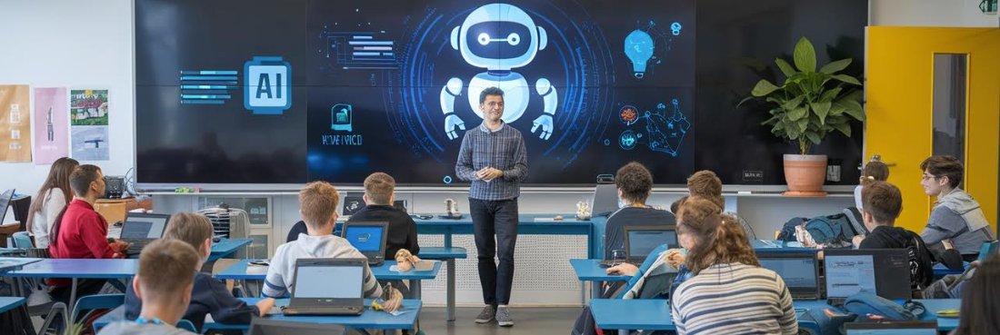

AI Tools for Language Teaching


Welcome to your guide for choosing the best AI tool for your needs. This website introduces a range of AI tools designed to support both teachers and students in language learning. You will find resources for tasks such as creating images, assisting with writing, and developing lesson plans all aimed at making language learning more efficient.
Instead of focusing on general AI chatbots such as ChatGPT, which most people already know, this guide highlights more specific tools designed for particular purposes. All tools included offer a free version, as the focus is on accessibility for both students and teachers.
I tested every AI tool on this website as part of my lesson preparation during my teaching internship. For example, I wrote an English text for my class and checked it using writing assistants. I also created presentations on common prepositions and designed exercises on future tenses. For the image and video generation tools, I took inspiration from my vocabulary lessons on travelling.